CHUNG SUYEON / SELECTED WORKS
01 / INTERACTIVE MOBILE UX
단독 기획 · 디자인
Kiti Paw
공부를 시작하는 이유를
캐릭터와의 교감에서 찾다.
DESIGN FOCUS
교감 → 학습 행동 → 성장의 확인
반복 암기의 부담을 줄이기 위해 영어 학습을
캐릭터 선택, 상황 퀘스트, 수집 보상으로 연결한
아동용 영어 학습 서비스입니다.

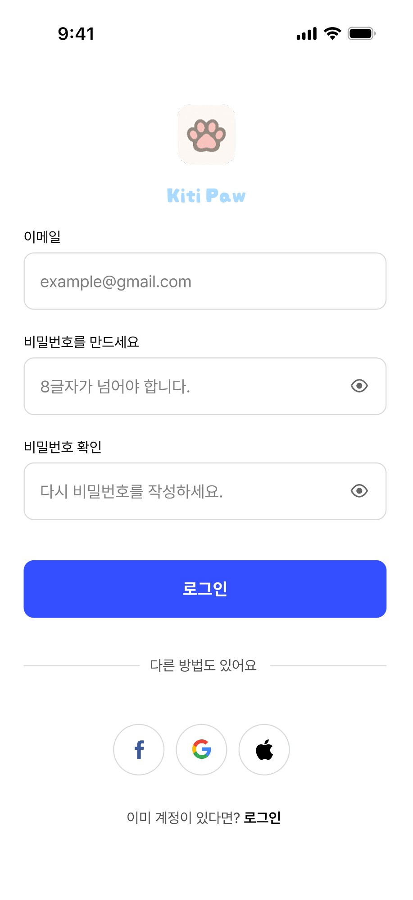

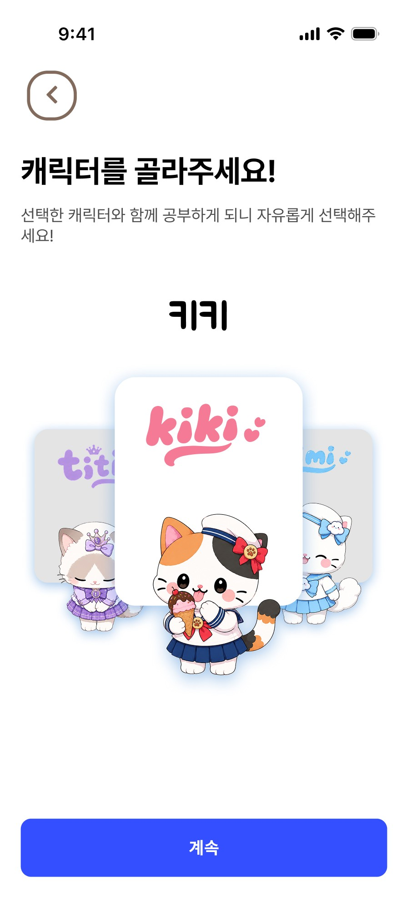


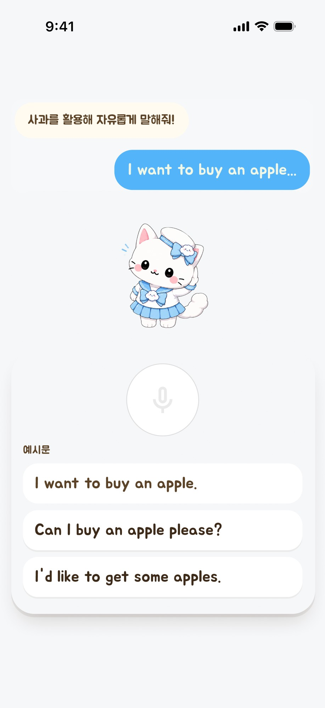


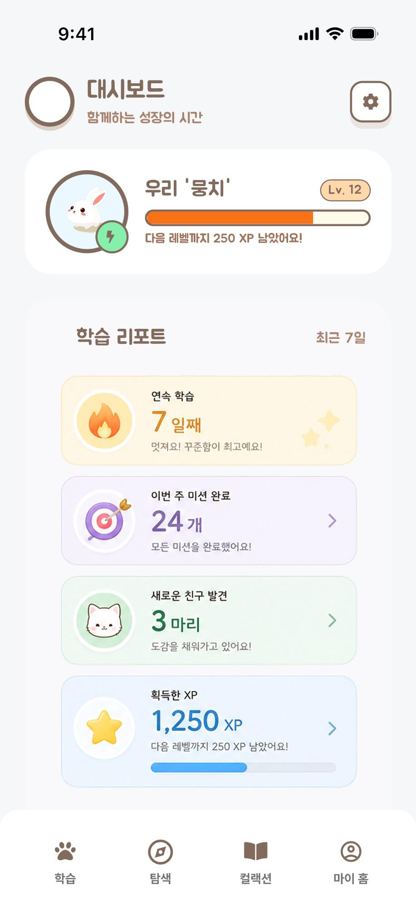

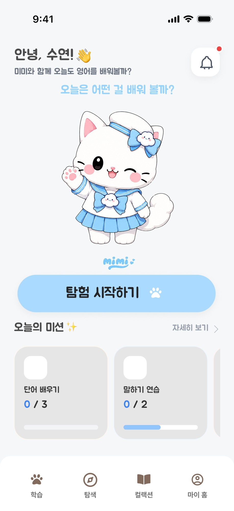
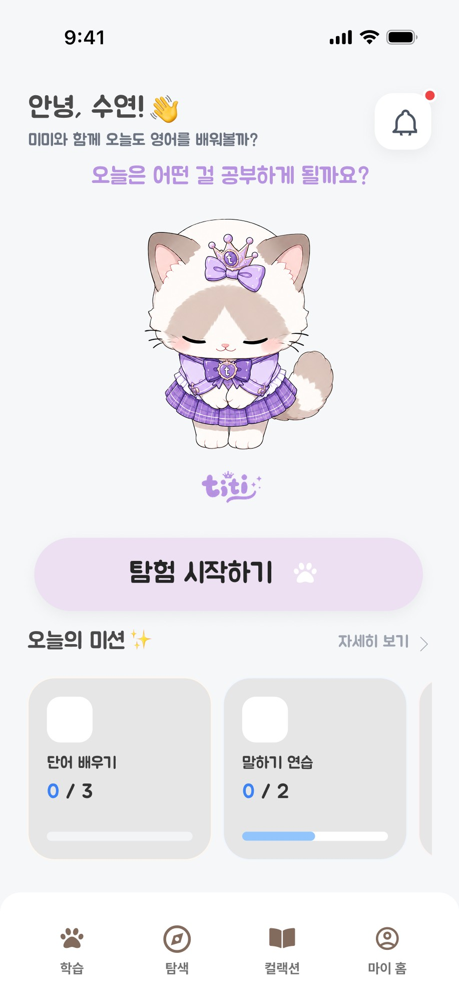
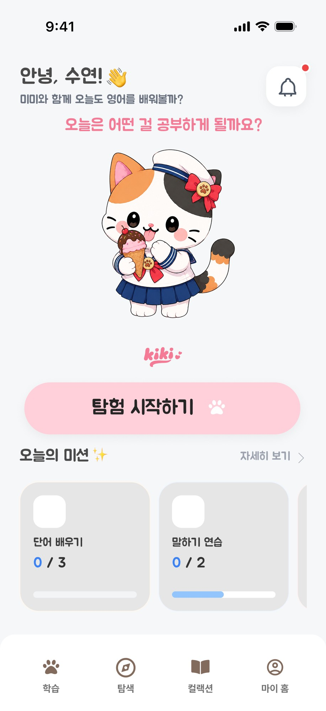
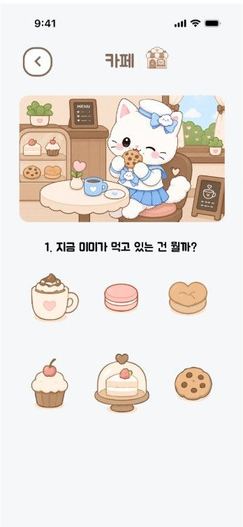


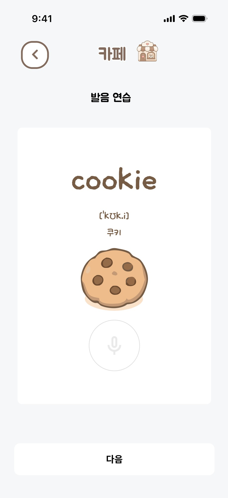
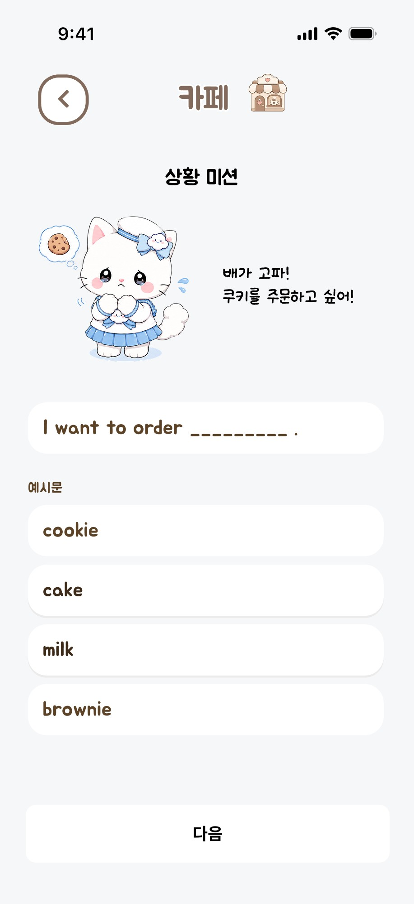

CHUNG SUYEON / SELECTED WORKS
KITI PAW / EXPERIENCE LOOP
단어를 배우고,
말해보고,
성장을 확인하다.
상황 속 단어를 발음하고 문장에
적용한 뒤, 결과와 보상을 확인하는
하나의 학습 흐름으로 구성했습니다.
목표는 학습 지속 동기 강화이며,
화면의 점수와 수치는 예시 데이터입니다.
01 발음 연습

02 상황 문장
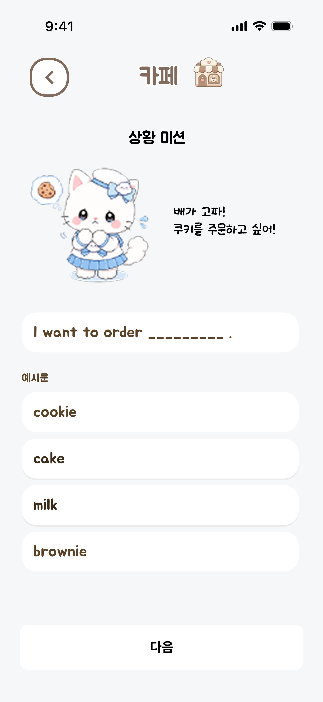
03 결과와 보상
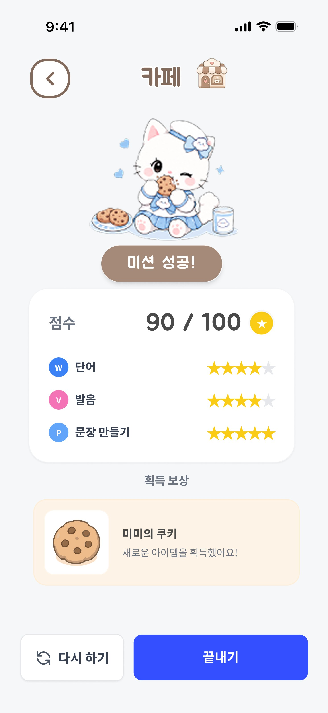
설계 연결: 캐릭터의 요청 → 발음 연습 → 문장 완성 → 시각적 보상
CHUNG SUYEON / SELECTED WORKS
02 / SOCIAL & PUBLIC SERVICE UX
LINK ON
검색창에 없는 답을,
시니어의 삶에서 찾다.
시니어가 쌓아온 경력과 지혜를 청년의
성장 기회로 연결하는 멘토링 서비스입니다.
경험의 기록, 탐색, 매칭을 하나로 묶었습니다.
DESIGN FOCUS
진입 부담을 낮추고, 신뢰를 드러내다.
2026 서비스디자인실무 / 시니어 마스터와 청년 멘티를 연결하는 서비스 제안
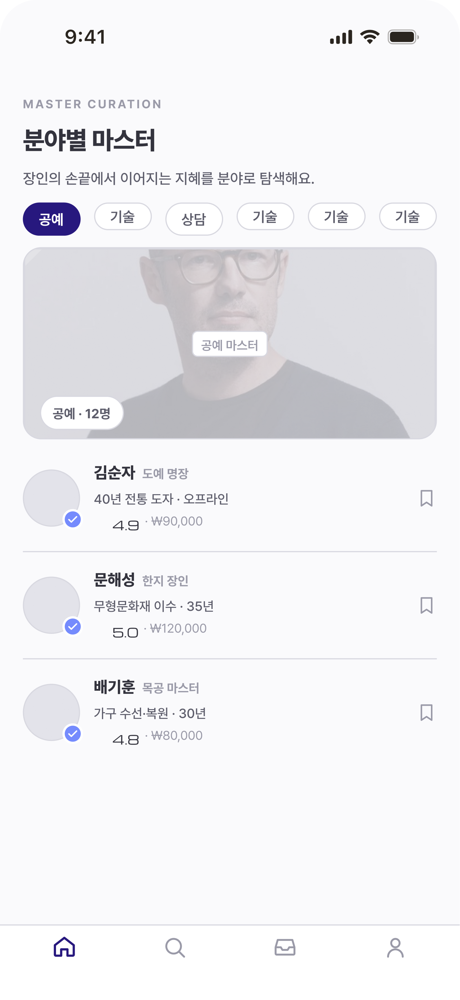


CHUNG SUYEON / SELECTED WORKS
LINK ON / KEY INTERACTION
입력 폼 대신,
경험을 말하는 시작.
문제
디지털 입력에 익숙하지 않은 시니어에게
긴 경력 작성은 첫 진입의 부담이 됩니다.
설계 방향
구술한 경험을 경력·직무·강의 주제로
정리해 확인할 수 있도록 구성했습니다.

01 경험을 말하기

02 구조화된 경력 확인
음성 입력 → 실시간 정리 → 사용자 확인 / 화면 데이터는 프로토타입 예시
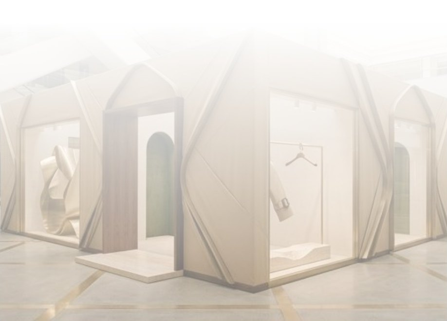
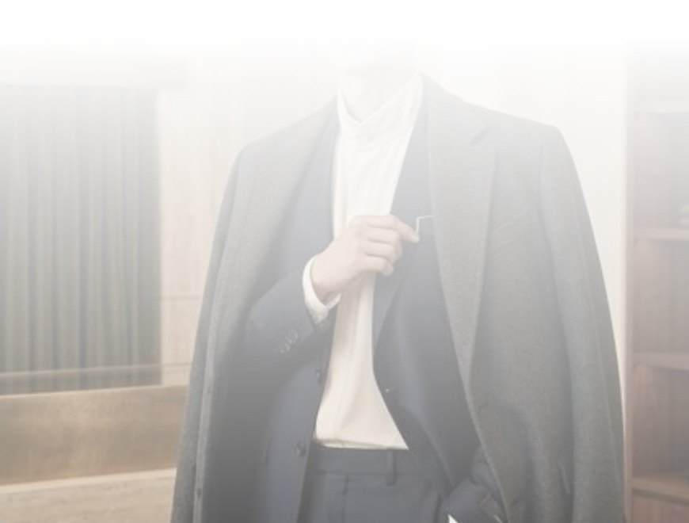

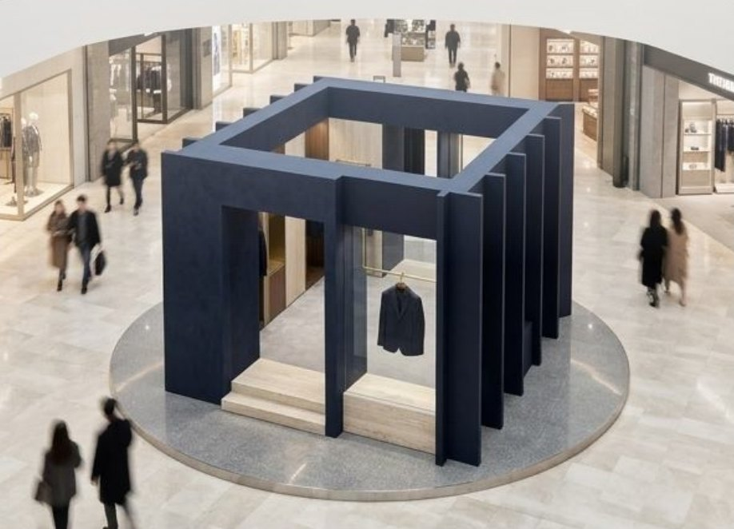


CHUNG SUYEON / SELECTED WORKS
03 / AI & EMERGING TECH EXPERIENCE
Maison Atelier
브랜드의 단서를
공간의 언어로 번역하다.
앰배서더, 상품, 컬렉션·위치 정보를 바탕으로
무드보드와 공간 기획 정보를 생성하는
AI 팝업스토어 기획 플랫폼입니다.
VISUAL OUTPUT
외관 · 인테리어 · 앰배서더
2026 AI시스템디자인 / 프로젝트에서 생성한 AI 시각화 이미지
CHUNG SUYEON / SELECTED WORKS
MAISON ATELIER / INPUT TO OUTPUT
입력은 간결하게, 결과는 구조적으로.

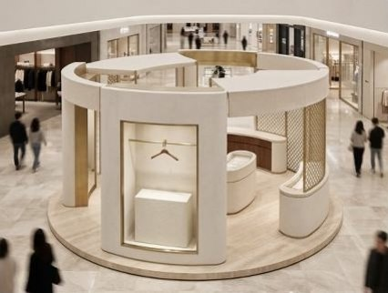
01 INPUT
02 INTERPRET
03 GENERATE
정보 구조화
프롬프트 구성
무드보드
공간 기획 데이터

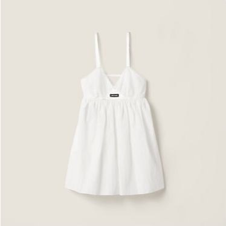
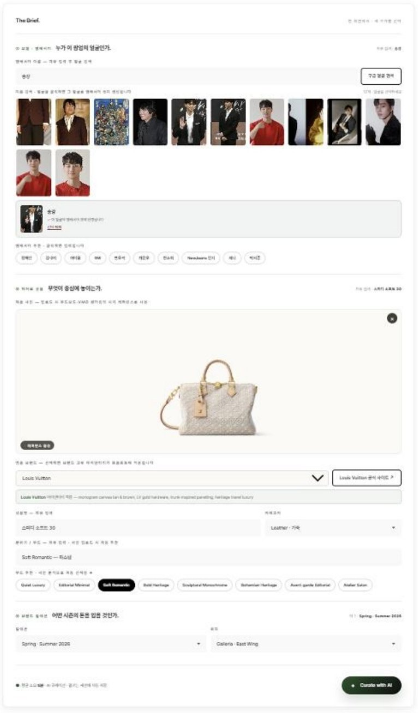
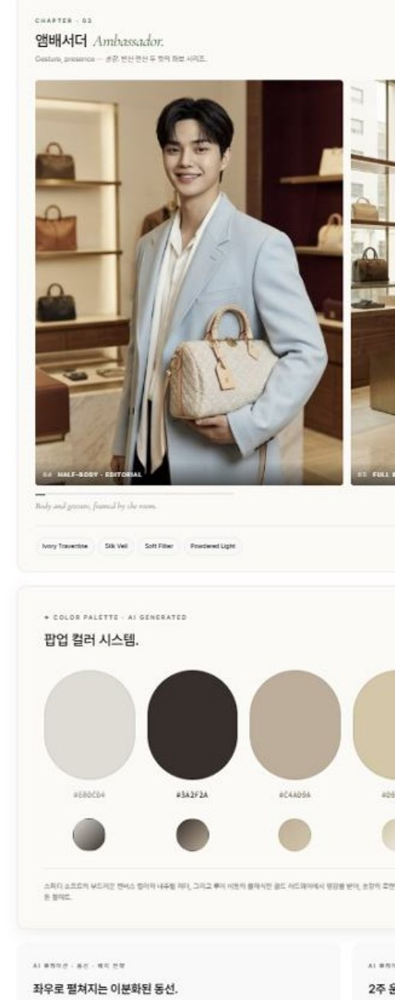
미우미우 드레스
명품 브랜드 아이덴티티와 상품 탐색 UI
업로드한 사진을 브라우저 canvas로 분
석해 평균 밝기·채도·따뜻함을 측정하고
그에 맞는 무드를 자동 선택하는 방식
동선·예산·예측값은 기획 보조 결과이며 별도 검증이 필요합니다.
CHUNG SUYEON / SELECTED WORKS
04 / SOCIAL & PUBLIC SERVICE UX
SH-Wave
비어 있는 공간을,
필요한 공간으로.
거북섬의 유휴 상가를 팝업, 전시, 업무 등
이용 목적과 연결하는 공간 탐색·운영 플랫폼을
제안했습니다.
TEAM PROJECT
정수연 정이든 장서윤
공간 탐색 홈 상단 / 팀 프로젝트의 서비스·UI 산출물


CHUNG SUYEON / SELECTED WORKS
SH-WAVE / DECISION SUPPORT
공간 활용을 위해
활용 목적을 묻다.
사용자의 질문
“이 공간에서 내가 하려는 일을
할 수 있을까?”
설계 방향
용도별 탐색에서 시작해 조건을 확인하고,
공간 추천과 예약으로 이어지도록
의사결정 흐름을 구성했습니다.
공간 상세 + 예약
조건 기반 AI 추천
화면의 신뢰도·매칭률·매출 예상값은 예시이며, 실제 성과로 제시하지 않았습니다.

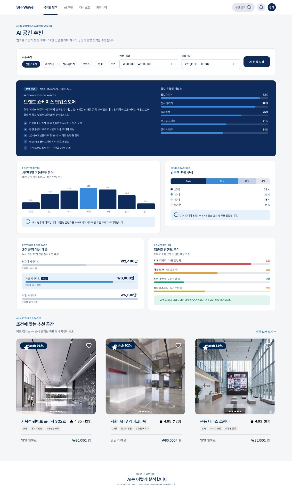
CHUNG SUYEON / SELECTED WORKS
05 / 3D SPATIAL & EXPERIENCE DESIGN
빛과 재료로 만드는 주거의 분위기
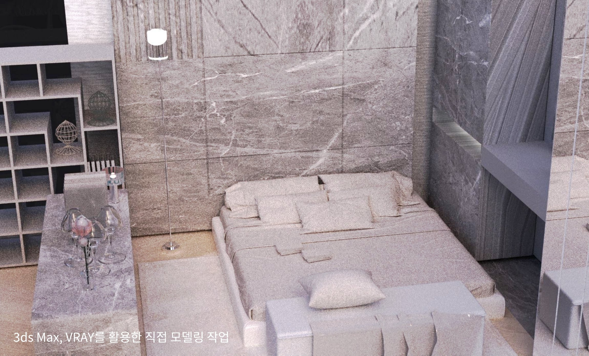
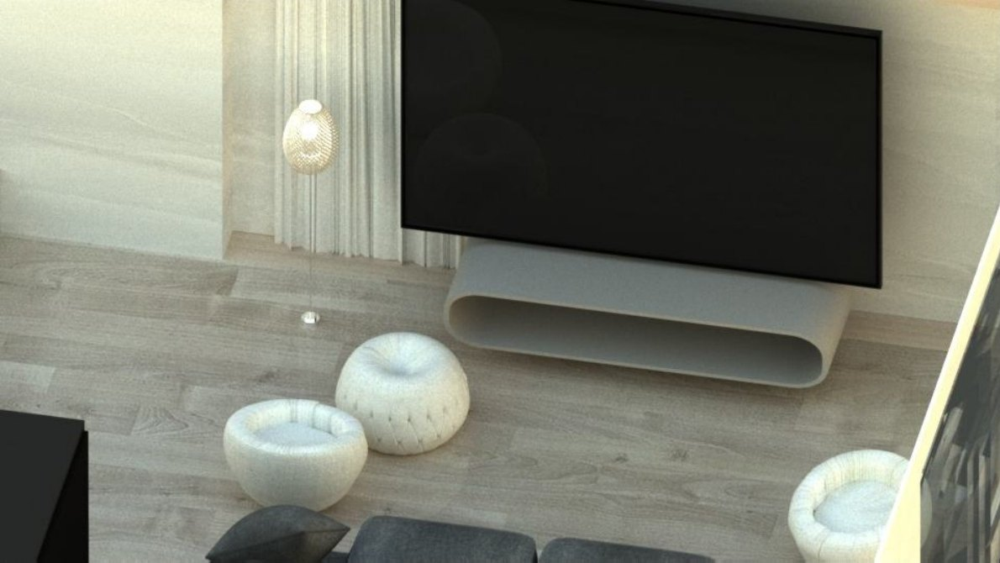

침실 / 거실 / 욕실 · 기존 포트폴리오의 렌더링 이미지
3ds Max로 침실·거실·욕실을 직접 모델링하고 V-Ray로 렌더링했습니다. 대리석·목재·패브릭의 질감과 조명의 방향·밝기를 조절해 머물고 싶은 분위기를 만들었습니다.